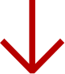

Digital designer with a strong interest in branding, identity and creative direction.
I'm a multimedia design student currently based in Copenhagen.
My main interests are digital design, visual identities and brand development.
I enjoy creating research-based design and develop and conceptualise ideas in accordance with a brief.
I freelance as a stylist and fashion assistant on the side of my studies, where I do both editorial and commercial work.
I'm a multimedia design student currently based in Copenhagen.
My main interests are digital design, visual identities and brand development.
I enjoy creating research-based design and develop and conceptualise ideas in accordance with a brief.
I freelance as a stylist and fashion assistant on the side of my studies, where I do both editorial and commercial work.
Vildskud Festival is an annual independent theater festival in Copenhagen. They tasked us to create a mobile first, sustainable website - each page had a maximum size of 0.125 mb. We had two weeks to design and develop our solution, and worked in a group of three.
My focus areas were to develop their new visual identity and collaborate on desiging the UI, design events posters and assist with the web development.
Kræss is an independent interior design store based in Copenhagen. As a group project we redesigned their website and create a SoMe strategy.
My focus areas were to redesign their visual identity, develop our digital solution and do the post production of video content for SoMe channels.
CustomiseMe sells customisable, vegan handsoaps. As a short group project we were tasked to redesign their website to make it more engaging.
My focus area were to design the UI, create a database, product photography and web development.
Kræss is an independent interior design store based in Copenhagen. As a group project we redesigned their website and create a SoMe strategy.
My focus areas were to redesign their visual identity, web development, SoMe strategy and do the post production of video content for SoMe channels.
Kræss is an independent interior design store based in Copenhagen. As a group project we redesigned their website and create a SoMe strategy.
My focus areas were to redesign their visual identity, develop our digital solution and do the post production of video content for SoMe channels.
Kræss is an independent interior design store based in Copenhagen. As a group project we redesigned their website and create a SoMe strategy.
My focus areas were to redesign their visual identity, develop our digital solution and do the post production of video content for SoMe channels.